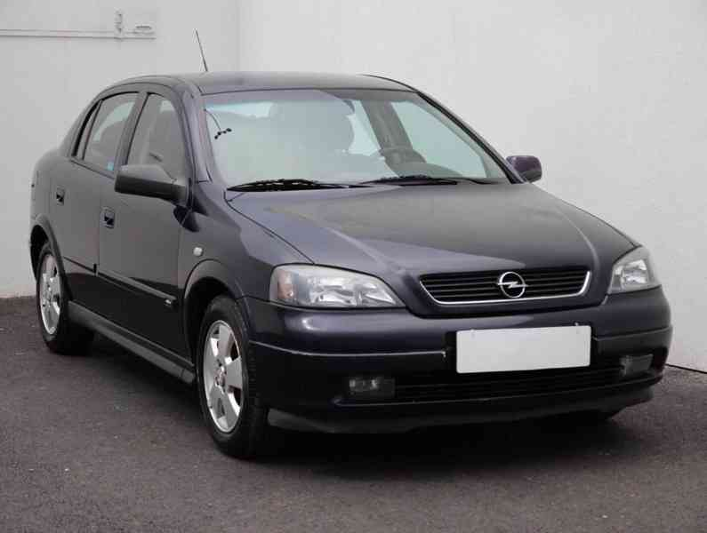

Opel Astra G je kompaktní auto vyráběné na přelomu tisíciletí. Je oblíbené díky nízké pořizovací ceně, jednoduché konstrukci a levným náhradním dílům. Často se objevuje jako první auto.
Astra je vhodná jako první auto hlavně díky jednoduchosti a nízkým nákladům. Na druhou stranu může trpět korozí, proto je důležité zkontrolovat stav karoserie.